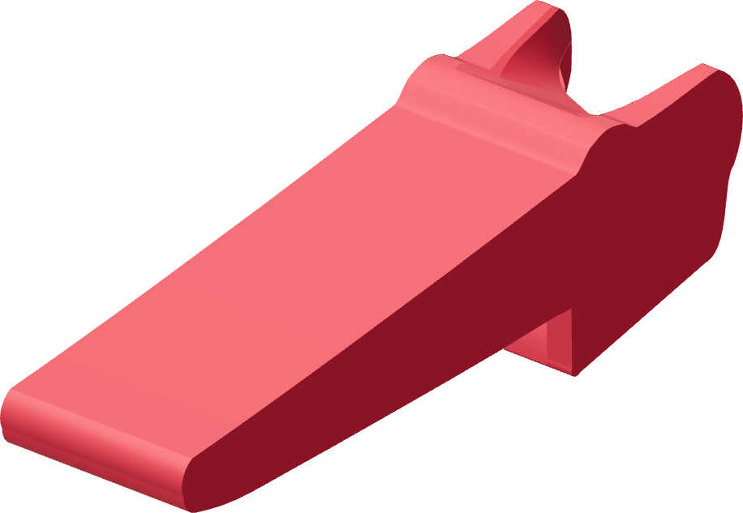

Attach the faucet lever first
The bare Touch-Flo and its accepted faucet lever are already connected before the tube or the shell is fitted.

- With the tube absent, lower the accepted faucet lever aft of its working position and slide it forward around the metal cylinder.
- Leave the faucet lever down at its unpressed rest. Keep it attached for sleeve insertion and later shell assembly.
- Confirm the donor's top port is empty. The thimble belongs on the tube before it enters this port.
Finished when
The faucet lever is attached at unpressed rest and the top port is empty.